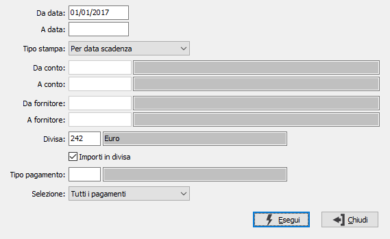

Stampa situazione pagamenti
Il programma effettua la stampa di report contenenti la situazione dei pagamenti già predisposti ma ancora da presentare in banca, già presentati in banca o completa, selezionandoli per fornitore, per conto di presentazione o per data di scadenza e indicando per ciascuno di essi il numero di distinta cui sono stati assegnati.

DA DATA: indicare la data scadenza da cui si intende iniziare la selezione delle scadenze per la stampa. Confermando a vuoto la stampa inizia dalla prima scadenza valida per l'esercizio corrente.
A DATA SCADENZA: È la data scadenza su cui si intende terminare la selezione delle scadenze per la stampa. Confermando a vuoto la stampa termina con l'ultima scadenza valida.
TIPO STAMPA: combo box per definire il criterio principale di ordinamento della stampa. valori ammessi: Per data scadenza; Per conto (banca) di presentazione/data; Per fornitore/data.
DA CONTO: campo attivo solo in caso Tipo stampa per Conto di presentazione. Indicare il codice della banca di presentazione da cui si intende iniziare la selezione di stampa. Sul campo è attiva la ricerca a video F9.
A CONTO: campo attivo solo in caso Tipo stampa per Conto di presentazione. Indicare il codice della banca di presentazione a cui si intende terminare la selezione di stampa. Sul campo è attiva la ricerca a video F9.
DA FORNITORE: campo attivo solo in caso Tipo stampa per Fornitore / data. Indicare il codice del fornitore da cui si vuole iniziare la selezione di stampa. Sul campo è attiva la ricerca a video F9.
A FORNITORE: : campo attivo solo in caso Tipo stampa per Fornitore / data. Indicare il codice del fornitore su cui si vuole terminare la selezione di stampa. Sul campo è attiva la ricerca a video F9.
DIVISA: inserire il codice della divisa che si vuole selezionare. Confermato a vuoto vengono selezionati le scadenze di tutte le divise presenti. Sul campo è attiva la ricerca a video F9.
IMPORTI IN DIVISA: check box. Valori ammessi: vuoto = stampa gli importi e i totali nella divisa richiesta.; spunta = Stampa gli importi e i totali in divisa di conto.
SELEZIONE: combo box per definire lo stato delle scadenze da selezionare. Valori ammessi: Tutti i pagamenti; Pagamenti da presentare; Pagamento già presentati.